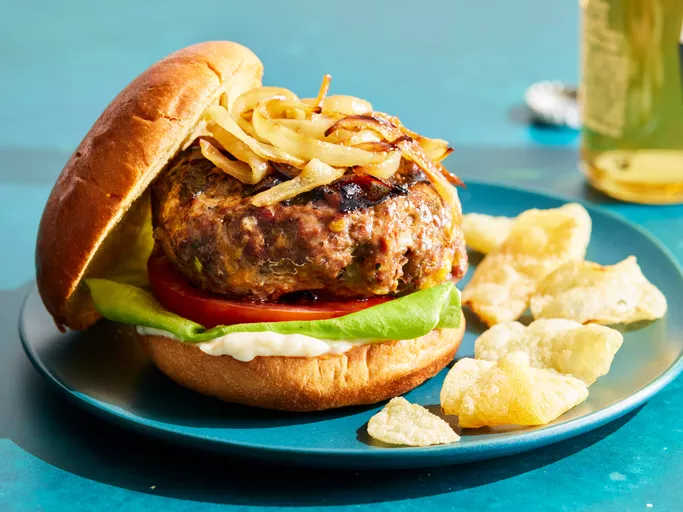

A homemade hamburger is a timeless classic, featuring a juicy beef
patty nestled between soft, toasted buns. The patty, seasoned to
perfection, is grilled or cooked to your desired level of doneness,
resulting in a mouthwatering combination of flavors and textures.
Topped with crisp lettuce, ripe tomatoes, and your favorite
condiments, it's a satisfying meal that never fails
to hit the spot.
- 1 ½ pounds lean ground beef
- ½ onion, finely chopped
- ½ cup shredded Colby Jack or Cheddar cheese
- 1 egg
- 1 (1 ounce) envelope dry onion soup mix
- 1 clove garlic, minced
- 1 tablespoon garlic powder
- 1 teaspoon soy sauce
- 1 teaspoon Worcestershire sauce
- 1 teaspoon dried parsley
- 1 teaspoon dried basil
- 1 teaspoon dried oregano
- ½ teaspoon crushed dried rosemary
- salt and pepper to taste
- Gather all ingredients. Preheat an outdoor grill for high heat
and lightly oil the grate.
- Meanwhile, combine ground beef, onion, cheese, egg, onion soup
mix, minced garlic, garlic powder, soy sauce, Worcestershire
sauce, parsley, basil, oregano, rosemary, salt,
and pepper in a large bowl.
- Use your hands to form the mixture into 4 patties.
- Cook patties on the preheated grill until no longer pink in the
center and the juices run clear,
about 4 to 5 minutes per side.
- An instant-read thermometer inserted into the center should
read at least 165 degrees F (74 degrees C).